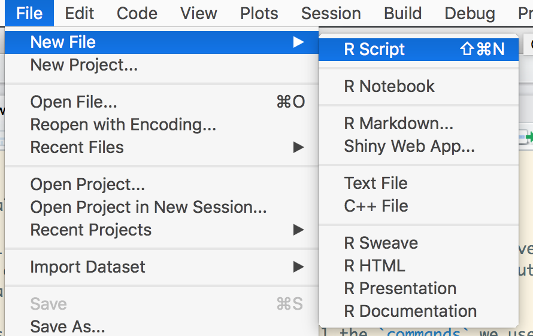
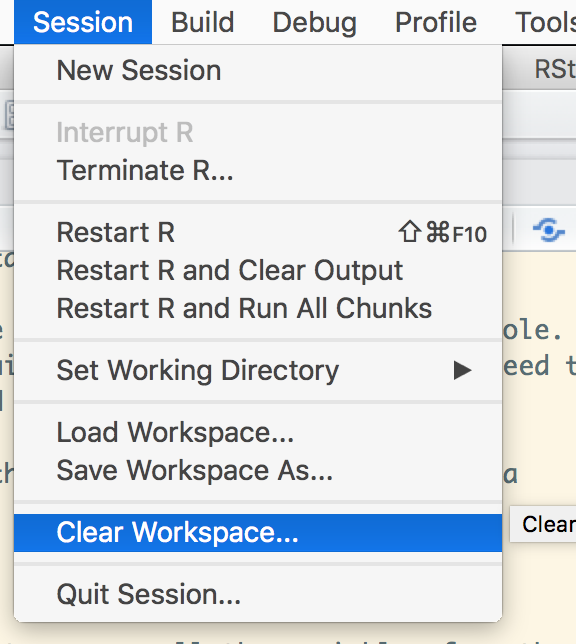
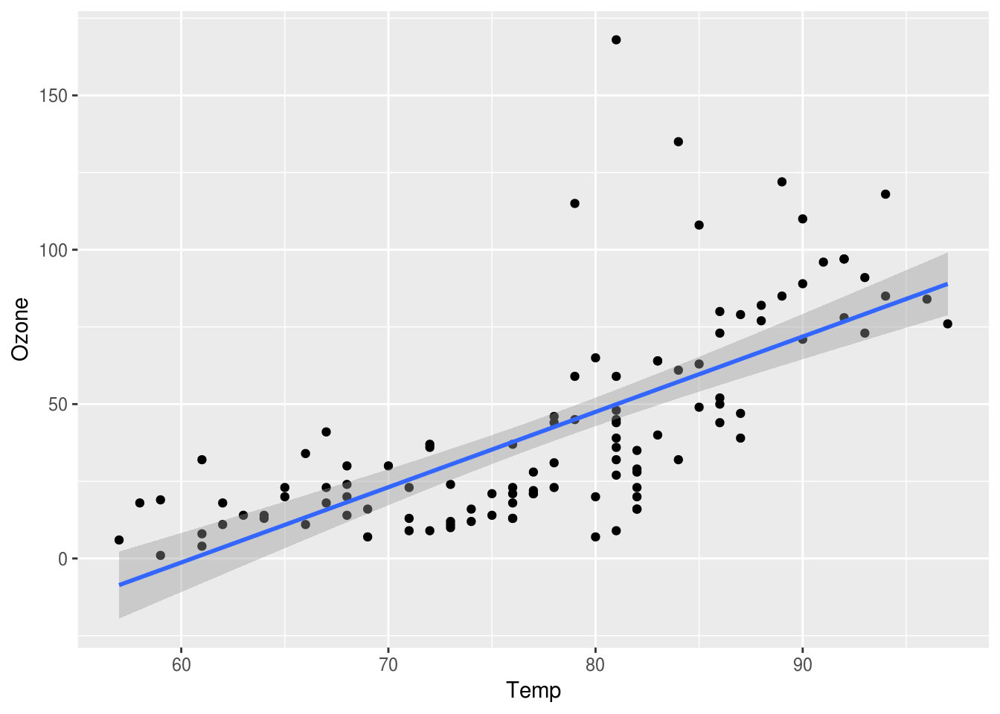

3 This time it’s for real!
library(ggplot2)
library(magrittr)
library(Hmisc)
library(dplyr)Let’s pick up the pace and put our newfound skills to the test. For this section, we’re gonna use a dataset that looks more like what we’ll encounter in real life. It’s bigger in both dimensions; it has more rows but also more columns. It also has some missing data (oh noes!). Now things are getting real.
3.1 Loading and exploring a larger dataset
We can load our new dataset the same way as before, using the read.csv() function.
airquality <- read.csv('airquality.csv')Let’s take a moment to explore the new dataset using tools we learned in the previous section. Try str, head, summary and get a good feel for the dataset. We can find the number of rows using nrow.
airquality %>% nrow()## [1] 1533.2 Counting missing values
I mentioned this dataset has some missing data, you may have noticed it already when exploring. In R, missing values are represented by the NA symbol.
It’s always a good idea to check for missing values, even if you are sure your data is complete. We can ask R to tell us whether there are any NAs in the dataset using the is.na() function.
airquality %>% is.na()## Ozone Solar.R Wind Temp Month Day
## [1,] FALSE FALSE FALSE FALSE FALSE FALSE
## [2,] FALSE FALSE FALSE FALSE FALSE FALSE
## [3,] FALSE FALSE FALSE FALSE FALSE FALSE
## [4,] FALSE FALSE FALSE FALSE FALSE FALSE
## [5,] TRUE TRUE FALSE FALSE FALSE FALSE
## [6,] FALSE TRUE FALSE FALSE FALSE FALSE
## [7,] FALSE FALSE FALSE FALSE FALSE FALSE
## [8,] FALSE FALSE FALSE FALSE FALSE FALSE
## [9,] FALSE FALSE FALSE FALSE FALSE FALSE
## [10,] TRUE FALSE FALSE FALSE FALSE FALSE
## [11,] FALSE TRUE FALSE FALSE FALSE FALSE
## [12,] FALSE FALSE FALSE FALSE FALSE FALSE
## [13,] FALSE FALSE FALSE FALSE FALSE FALSE
## [14,] FALSE FALSE FALSE FALSE FALSE FALSE
## [15,] FALSE FALSE FALSE FALSE FALSE FALSE
## [16,] FALSE FALSE FALSE FALSE FALSE FALSE
## [17,] FALSE FALSE FALSE FALSE FALSE FALSE
## [18,] FALSE FALSE FALSE FALSE FALSE FALSE
## [19,] FALSE FALSE FALSE FALSE FALSE FALSE
## [20,] FALSE FALSE FALSE FALSE FALSE FALSE
## [21,] FALSE FALSE FALSE FALSE FALSE FALSE
## [22,] FALSE FALSE FALSE FALSE FALSE FALSE
## [23,] FALSE FALSE FALSE FALSE FALSE FALSE
## [24,] FALSE FALSE FALSE FALSE FALSE FALSE
## [25,] TRUE FALSE FALSE FALSE FALSE FALSE
## [26,] TRUE FALSE FALSE FALSE FALSE FALSE
## [27,] TRUE TRUE FALSE FALSE FALSE FALSE
## [28,] FALSE FALSE FALSE FALSE FALSE FALSE
## [29,] FALSE FALSE FALSE FALSE FALSE FALSE
## [30,] FALSE FALSE FALSE FALSE FALSE FALSE
## [31,] FALSE FALSE FALSE FALSE FALSE FALSE
## [32,] TRUE FALSE FALSE FALSE FALSE FALSE
## [33,] TRUE FALSE FALSE FALSE FALSE FALSE
## [34,] TRUE FALSE FALSE FALSE FALSE FALSE
## [35,] TRUE FALSE FALSE FALSE FALSE FALSE
## [36,] TRUE FALSE FALSE FALSE FALSE FALSE
## [37,] TRUE FALSE FALSE FALSE FALSE FALSE
## [38,] FALSE FALSE FALSE FALSE FALSE FALSE
## [39,] TRUE FALSE FALSE FALSE FALSE FALSE
## [40,] FALSE FALSE FALSE FALSE FALSE FALSE
## [41,] FALSE FALSE FALSE FALSE FALSE FALSE
## [42,] TRUE FALSE FALSE FALSE FALSE FALSE
## [43,] TRUE FALSE FALSE FALSE FALSE FALSE
## [44,] FALSE FALSE FALSE FALSE FALSE FALSE
## [45,] TRUE FALSE FALSE FALSE FALSE FALSE
## [46,] TRUE FALSE FALSE FALSE FALSE FALSE
## [47,] FALSE FALSE FALSE FALSE FALSE FALSE
## [48,] FALSE FALSE FALSE FALSE FALSE FALSE
## [49,] FALSE FALSE FALSE FALSE FALSE FALSE
## [50,] FALSE FALSE FALSE FALSE FALSE FALSE
## [51,] FALSE FALSE FALSE FALSE FALSE FALSE
## [52,] TRUE FALSE FALSE FALSE FALSE FALSE
## [53,] TRUE FALSE FALSE FALSE FALSE FALSE
## [54,] TRUE FALSE FALSE FALSE FALSE FALSE
## [55,] TRUE FALSE FALSE FALSE FALSE FALSE
## [56,] TRUE FALSE FALSE FALSE FALSE FALSE
## [57,] TRUE FALSE FALSE FALSE FALSE FALSE
## [58,] TRUE FALSE FALSE FALSE FALSE FALSE
## [59,] TRUE FALSE FALSE FALSE FALSE FALSE
## [60,] TRUE FALSE FALSE FALSE FALSE FALSE
## [61,] TRUE FALSE FALSE FALSE FALSE FALSE
## [62,] FALSE FALSE FALSE FALSE FALSE FALSE
## [63,] FALSE FALSE FALSE FALSE FALSE FALSE
## [64,] FALSE FALSE FALSE FALSE FALSE FALSE
## [65,] TRUE FALSE FALSE FALSE FALSE FALSE
## [66,] FALSE FALSE FALSE FALSE FALSE FALSE
## [67,] FALSE FALSE FALSE FALSE FALSE FALSE
## [68,] FALSE FALSE FALSE FALSE FALSE FALSE
## [69,] FALSE FALSE FALSE FALSE FALSE FALSE
## [70,] FALSE FALSE FALSE FALSE FALSE FALSE
## [71,] FALSE FALSE FALSE FALSE FALSE FALSE
## [72,] TRUE FALSE FALSE FALSE FALSE FALSE
## [73,] FALSE FALSE FALSE FALSE FALSE FALSE
## [74,] FALSE FALSE FALSE FALSE FALSE FALSE
## [75,] TRUE FALSE FALSE FALSE FALSE FALSE
## [76,] FALSE FALSE FALSE FALSE FALSE FALSE
## [77,] FALSE FALSE FALSE FALSE FALSE FALSE
## [78,] FALSE FALSE FALSE FALSE FALSE FALSE
## [79,] FALSE FALSE FALSE FALSE FALSE FALSE
## [80,] FALSE FALSE FALSE FALSE FALSE FALSE
## [81,] FALSE FALSE FALSE FALSE FALSE FALSE
## [82,] FALSE FALSE FALSE FALSE FALSE FALSE
## [83,] TRUE FALSE FALSE FALSE FALSE FALSE
## [84,] TRUE FALSE FALSE FALSE FALSE FALSE
## [85,] FALSE FALSE FALSE FALSE FALSE FALSE
## [86,] FALSE FALSE FALSE FALSE FALSE FALSE
## [87,] FALSE FALSE FALSE FALSE FALSE FALSE
## [88,] FALSE FALSE FALSE FALSE FALSE FALSE
## [89,] FALSE FALSE FALSE FALSE FALSE FALSE
## [90,] FALSE FALSE FALSE FALSE FALSE FALSE
## [91,] FALSE FALSE FALSE FALSE FALSE FALSE
## [92,] FALSE FALSE FALSE FALSE FALSE FALSE
## [93,] FALSE FALSE FALSE FALSE FALSE FALSE
## [94,] FALSE FALSE FALSE FALSE FALSE FALSE
## [95,] FALSE FALSE FALSE FALSE FALSE FALSE
## [96,] FALSE TRUE FALSE FALSE FALSE FALSE
## [97,] FALSE TRUE FALSE FALSE FALSE FALSE
## [98,] FALSE TRUE FALSE FALSE FALSE FALSE
## [99,] FALSE FALSE FALSE FALSE FALSE FALSE
## [100,] FALSE FALSE FALSE FALSE FALSE FALSE
## [101,] FALSE FALSE FALSE FALSE FALSE FALSE
## [102,] TRUE FALSE FALSE FALSE FALSE FALSE
## [103,] TRUE FALSE FALSE FALSE FALSE FALSE
## [104,] FALSE FALSE FALSE FALSE FALSE FALSE
## [105,] FALSE FALSE FALSE FALSE FALSE FALSE
## [106,] FALSE FALSE FALSE FALSE FALSE FALSE
## [107,] TRUE FALSE FALSE FALSE FALSE FALSE
## [108,] FALSE FALSE FALSE FALSE FALSE FALSE
## [109,] FALSE FALSE FALSE FALSE FALSE FALSE
## [110,] FALSE FALSE FALSE FALSE FALSE FALSE
## [111,] FALSE FALSE FALSE FALSE FALSE FALSE
## [112,] FALSE FALSE FALSE FALSE FALSE FALSE
## [113,] FALSE FALSE FALSE FALSE FALSE FALSE
## [114,] FALSE FALSE FALSE FALSE FALSE FALSE
## [115,] TRUE FALSE FALSE FALSE FALSE FALSE
## [116,] FALSE FALSE FALSE FALSE FALSE FALSE
## [117,] FALSE FALSE FALSE FALSE FALSE FALSE
## [118,] FALSE FALSE FALSE FALSE FALSE FALSE
## [119,] TRUE FALSE FALSE FALSE FALSE FALSE
## [120,] FALSE FALSE FALSE FALSE FALSE FALSE
## [121,] FALSE FALSE FALSE FALSE FALSE FALSE
## [122,] FALSE FALSE FALSE FALSE FALSE FALSE
## [123,] FALSE FALSE FALSE FALSE FALSE FALSE
## [124,] FALSE FALSE FALSE FALSE FALSE FALSE
## [125,] FALSE FALSE FALSE FALSE FALSE FALSE
## [126,] FALSE FALSE FALSE FALSE FALSE FALSE
## [127,] FALSE FALSE FALSE FALSE FALSE FALSE
## [128,] FALSE FALSE FALSE FALSE FALSE FALSE
## [129,] FALSE FALSE FALSE FALSE FALSE FALSE
## [130,] FALSE FALSE FALSE FALSE FALSE FALSE
## [131,] FALSE FALSE FALSE FALSE FALSE FALSE
## [132,] FALSE FALSE FALSE FALSE FALSE FALSE
## [133,] FALSE FALSE FALSE FALSE FALSE FALSE
## [134,] FALSE FALSE FALSE FALSE FALSE FALSE
## [135,] FALSE FALSE FALSE FALSE FALSE FALSE
## [136,] FALSE FALSE FALSE FALSE FALSE FALSE
## [137,] FALSE FALSE FALSE FALSE FALSE FALSE
## [138,] FALSE FALSE FALSE FALSE FALSE FALSE
## [139,] FALSE FALSE FALSE FALSE FALSE FALSE
## [140,] FALSE FALSE FALSE FALSE FALSE FALSE
## [141,] FALSE FALSE FALSE FALSE FALSE FALSE
## [142,] FALSE FALSE FALSE FALSE FALSE FALSE
## [143,] FALSE FALSE FALSE FALSE FALSE FALSE
## [144,] FALSE FALSE FALSE FALSE FALSE FALSE
## [145,] FALSE FALSE FALSE FALSE FALSE FALSE
## [146,] FALSE FALSE FALSE FALSE FALSE FALSE
## [147,] FALSE FALSE FALSE FALSE FALSE FALSE
## [148,] FALSE FALSE FALSE FALSE FALSE FALSE
## [149,] FALSE FALSE FALSE FALSE FALSE FALSE
## [150,] TRUE FALSE FALSE FALSE FALSE FALSE
## [151,] FALSE FALSE FALSE FALSE FALSE FALSE
## [152,] FALSE FALSE FALSE FALSE FALSE FALSE
## [153,] FALSE FALSE FALSE FALSE FALSE FALSEThis will list out TRUE or FALSE for every value in new_data, for the question “is this value equal to NA?”. It’s kind hard to read, though.
If we wanted to get a general sense of how many NAs there were in our entire dataset, we could do something like this:
# library(magrittr) # load the library if its not already loaded
airquality %>% is.na() %>% sum()## [1] 443.3 Ignoring missing values
If we try to call some descriptive statistics on any columns with NA values, we will get an ugly result. Let’s try getting the mean for Ozone levels.
# library(dplyr) # load the library if its not already loaded
airquality %>% summarise(mean(Ozone))## mean(Ozone)
## 1 NANot what we were looking for.
By default, many functions in R will return NA if called on a vector with any NA values inside. We can override this behavior by adding the na.rm = TRUE argument
airquality %>% summarise(mean(Ozone, na.rm=T))## mean(Ozone, na.rm = T)
## 1 42.12931There are important questions to ask yourself when dealing with missing data, there’s no one-size-fits-all answer for it. A slapdash approach is to simply remove any rows with missing data.
aircomplete <- airquality %>% filter(complete.cases(airquality))If you call nrow on aircomplete, you’ll see we have 111 rows now instead of the 153 we had before.
aircomplete %>% nrow()## [1] 1113.4 Non-numeric data
So far, we’ve primarily worked with numeric data.
Let’s talk briefly about how R handles string or character data.
Here’s a data frame with some letters.
myname <- data.frame(letter=c("k","e","l","s","e","y"))Let’s look at the structure of the myname object, and the letter field of the object.
myname %>% str()## 'data.frame': 6 obs. of 1 variable:
## $ letter: Factor w/ 5 levels "e","k","l","s",..: 2 1 3 4 1 5myname$letter %>% str()## Factor w/ 5 levels "e","k","l","s",..: 2 1 3 4 1 5Hmm, it says Factor w/ 5 levels “e”,“k”,“l”,“s”,..: 2 1 3 4 1 5. What does this mean?
By default, R stores string fields in data frames as factors.
Behind the scenes, R identifies the unique characters strings in the field, substitutes each one with a unique integer, and remembers the original strings as levels.
myname$letter %>% levels()## [1] "e" "k" "l" "s" "y"myname$letter %>% as.integer()## [1] 2 1 3 4 1 5For many processes and analyses, this data structure will work fine.
In some situations, however, it becomes problematic.
Let’s try to modify the myname data frame, and make the letters spell out kelsie rather than kelsey.
We need to change the letter in the 6th position to e and the letter in the 5th position to i.
myname$letter[6] <- "e"
myname$letter[5] <- "i"## Warning in `[<-.factor`(`*tmp*`, 5, value = structure(c(2L, 1L, 3L, 4L, :
## invalid factor level, NA generatedLet’s print the updated data frame.
Not what we want.
There are a couple of ways to override R’s default behavior of storing text fields as columns.
If we’re creating a data frame from scratch, we can set the stringsAsFactors parameter equal to FALSE.
myname <- data.frame(letter=c("k","e","l","s","e","y"), stringsAsFactors=F)Check out the structure str and see what is different.
Let’s try making the same modifications now.
myname$letter[6] <- "e"
myname$letter[5] <- "i"The character data type is much more flexible.
If we’ve already created (or read) a data frame, we can use the as.character function on the text field itself.
myname <- data.frame(letter=c("k","e","l","s","e","y"))
myname %>% str()## 'data.frame': 6 obs. of 1 variable:
## $ letter: Factor w/ 5 levels "e","k","l","s",..: 2 1 3 4 1 5myname$letter <- myname$letter %>% as.character()
myname %>% str()## 'data.frame': 6 obs. of 1 variable:
## $ letter: chr "k" "e" "l" "s" ...myname$letter[6] <- "e"
myname$letter[5] <- "i"Looking out for factors is critical when typecasting numeric data that is mistakenly stored as text.
Here’s another data frame.
fives <- data.frame(v1=c("5","10","15","20"))Let’s look at the structure and levels:
fives %>% str()## 'data.frame': 4 obs. of 1 variable:
## $ v1: Factor w/ 4 levels "10","15","20",..: 4 1 2 3fives$v1 %>% levels()## [1] "10" "15" "20" "5"We want these data points stored as a numeric type, but currently, they’re stored as text, and specifically as a factor.
What does it look like if we convert the factor to numeric?
fives$v1 %>% as.numeric()## [1] 4 1 2 3So problematic! Why did this happen?
fives$v1 %>% as.character() %>% as.numeric()## [1] 5 10 15 20That works as expected.
Are factors ever useful? Yes.
Here’s some pretend survey data.
survey <- data.frame(gender=rep(c("Male","Female"),c(5,7)),response=rep(c("Excellent","Good","Fair","Poor"),3))Let’s change the levels of the gender field.
survey$gender %>% levels()## [1] "Female" "Male"levels(survey$gender) <- c("F","M")What does it look like now?
We can also take advantage of our understanding of the factor data type to convert the response variable into a numeric field.
I want excellent to map to 4, good to map to 3, fair to map to 2 and poor to map to 1.
We’ll use the as.numeric function eventually, but first we need to see if the levels are in the order that we want them.
survey$response %>% levels()## [1] "Excellent" "Fair" "Good" "Poor"They’re not. Let’s change them, so that less favorable responses will appear before more favorable responses when alphabetized.
After we change the levels, we’ll need to turn the response field into a character field, and then re-factor.
levels(survey$response) <- c("D Excellent","B Fair","C Good","A Poor")
survey$response <- survey$response %>% as.character() %>% as.factor()
survey$response %>% levels()## [1] "A Poor" "B Fair" "C Good" "D Excellent"Much better. Now we can call the as.numeric function.
survey %>% mutate(as.numeric(response))## gender response as.numeric(response)
## 1 M D Excellent 4
## 2 M C Good 3
## 3 M B Fair 2
## 4 M A Poor 1
## 5 M D Excellent 4
## 6 F C Good 3
## 7 F B Fair 2
## 8 F A Poor 1
## 9 F D Excellent 4
## 10 F C Good 3
## 11 F B Fair 2
## 12 F A Poor 1How useful!
The takeaway:
By default, R stores text fields as factors. And factors are strange.
At times it seems like they are working against us.
But if we understand how they work, we can make them work for us!
Now, back to numeric data.
3.5 Analyzing and Visualizing the data using a script
We can start by visualizing the data. We have more data to play with now, but let’s start with the same plot we used last time.
# plot to compare temperature vs ozone
plt <- ggplot(airquality) + geom_point(aes(x=Temp, y=Ozone))
print(plt)## Don't know how to automatically pick scale for object of type impute. Defaulting to continuous.
You’ll notice two new things about what we did here. First, we assign the output to plt, this will be important when we want to make adjustments to the plot later. Second, you’ll notice when we do that, nothing appears; we have to print the plt to get it to show up.
3.6 Creating a R script to save code and analysis
Now, I want you to go back and do everything we just did over again.
What, you think that’s ridiculous? The reality is, we often have to go back and make changes upstream. When we do this, it can get very, very painful if we’re doing everything interactively, in the console.
In all our previous examples we have been using the interactive console. It is an excellent application to quickly analyze the data, but we need to keep a reasonable log of what we did (and possibly way).
Let us start by creating a file, with all the commands we used in a sequence.
Click the symbol for New Script and you’ll see RStudio’s built-in text editor pop up.

And then we will clear the session, to remove all the variables from the environment. This insures that we are starting with a clean slate.


It is good practice, in programming to place all the libraries we need at the top. Imagine arranging all the ingredients before we start following a recipie for our dish.
Let’s take a moment to put all our work in. I know it’s a pain but it will pay off if we want to make changes later.
# load libraries
library(ggplot2)
library(dplyr)
# read in data
airquality <- read.csv('airquality.csv')
# filter for only complete cases
aircomplete <- airquality[complete.cases(airquality), ]
# create a plot comparing, Ozone levels with Temperature
plt <- ggplot(aircomplete) + geom_point(aes(x=Temp, y=Ozone))
print(plt)
We can run the entire script by clicking Source at the top of the editor pane.
To run just a specific line or lines, you can select the section you want to run and then click Run
Let’s get back to our data. You may have seen a pattern in the plot we made earlier. Let’s pick up our analysis with a little more visualization and some modeling.
3.7 Modeling the data
We’ll model the data using the reliable lm() function again. Let’s add the following to the end of our script and Source it.
ozone_model <- lm(Ozone ~ Temp, data = aircomplete)
print(summary(ozone_model))##
## Call:
## lm(formula = Ozone ~ Temp, data = aircomplete)
##
## Residuals:
## Min 1Q Median 3Q Max
## -40.922 -17.459 -0.874 10.444 118.078
##
## Coefficients:
## Estimate Std. Error t value Pr(>|t|)
## (Intercept) -147.6461 18.7553 -7.872 2.76e-12 ***
## Temp 2.4391 0.2393 10.192 < 2e-16 ***
## ---
## Signif. codes: 0 '***' 0.001 '**' 0.01 '*' 0.05 '.' 0.1 ' ' 1
##
## Residual standard error: 23.92 on 109 degrees of freedom
## Multiple R-squared: 0.488, Adjusted R-squared: 0.4833
## F-statistic: 103.9 on 1 and 109 DF, p-value: < 2.2e-16Our model tells us there is a statistically significant relationship between Ozone and Temperature. If we want to add the linear model to our plot, we can use the geom_abline() function. geom_abline() takes two arguments, the intercept and slope. We can use the coef() function to extract those values from the model. Add the following lines to your script and Source it.
coef(ozone_model)## (Intercept) Temp
## -147.64607 2.43911With that info, we’re ready to add our linear model. Add the following lines to your script and Source it.
plt_2 <- plt + geom_abline(intercept = -147.64607 , slope = 2.43911)
print(plt_2)
3.8 Making a reproducible report
Great. Now, what if we want to make a report of our work? With R, you get the power of knitr, which will knit your work together into a report. Let’s try it on our current script. Go to File -> Knit Document, name the file airquality_report and select HTML, then watch the magic happen!
Here is a link to an example script: example_script.R example_script.html